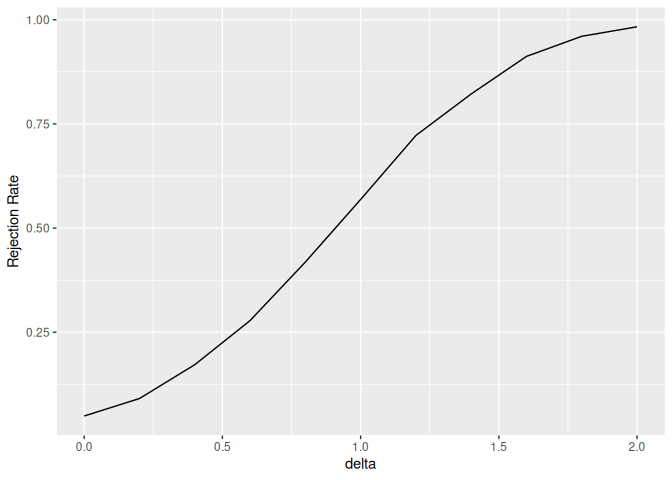

cmstatrExt provides statistical methods intended for composite material data that are not included in CMH-17-1G.
Example Usage
In these examples we’ll use the following packages:
Currently, this package provides several functions related to equivalency tests. Factors for a two-sample dual-acceptance criteria can be calculated as follows:
k <- k_equiv_two_sample(
alpha = 0.05,
n = 18, # size of the qualification sample
m = 6 # size of the acceptance sample
)
k
#> [1] 2.9594727 0.9541395The power of this test for detecting reduction in mean can be computed as follows:
power_sim_dual(
n_qual = 18,
m_equiv = 6,
replicates = 2500,
distribution = "rnorm",
param_qual = data.frame(mean = 0, sd = 1),
param_equiv = data.frame(mean = seq(-2, 0, length.out = 11), sd = 1),
k1 = k[1], k2 = k[2]
) %>%
mutate(delta = 0 - mean) %>%
ggplot(aes(x = delta, y = `Rejection Rate`)) +
geom_line()
Development
If you have a suggestion or question, please create an issue on GitHub.
If you want to contribute to this package, Pull Requests are welcome!